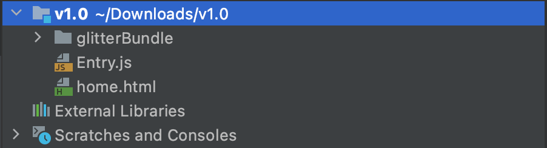

<!DOCTYPE html>
<html lang="en">
<head>
    <meta charset="UTF-8">
    <title>Title</title>
    <script src="../glitterBundle/ControlInstance.js"></script>
    <link href="../glitterBundle/bootstrap.css" rel="stylesheet">
    <link href="../fontawesome-free-5.15.4-web/css/all.min.css" rel="stylesheet">
    <script src="https://cdn.jsdelivr.net/npm/marked/marked.min.js"></script>

    <link rel="stylesheet" href="https://cdnjs.cloudflare.com/ajax/libs/highlight.js/10.7.1/styles/xcode.min.css">
    <script src="https://cdnjs.cloudflare.com/ajax/libs/highlight.js/10.7.1/highlight.min.js"></script>
    <!-- and it's easy to individually load additional languages -->
    <script src="https://cdnjs.cloudflare.com/ajax/libs/highlight.js/10.7.1/languages/go.min.js"></script>
    <link href="../css/article.css" rel="stylesheet">
</head>
<body>
<script>
    lifeCycle.onCreate=function (){

    }
    lifeCycle.onCreateView=function (){
        return `
        <h3 style="font-size: 39px;font-weight: 400;">下載專案</h3>
    <div style="height: 1px;width: 100%;background-color: whitesmoke;margin-top: 20px;margin-bottom: 20px;"></div>
    <h4>版本列表</h4>
            <a href="../versionList/v2.0.3/v2.0.3.zip" style="margin-top: 5px;"><i class="fas fa-link"></i> 2.0.3</a>
        <a href="../versionList/v2.0.2/v2.0.2.zip" style="margin-top: 5px;"><i class="fas fa-link"></i> 2.0.2</a>
    <a href="../versionList/v2.0.1/v2.0.1.zip" style="margin-top: 5px;"><i class="fas fa-link"></i> 2.0.1</a>
    <a href="../versionList/v2.0/v2.0.zip" style="margin-top: 5px;"><i class="fas fa-link"></i> 2.0</a>
    <a href="../versionList/v1.1/v1.1.zip" style="margin-top: 5px;"><i class="fas fa-link"></i> 1.1</a>
<a href="../versionList/v1.0/v1.0.zip" style="margin-top: 5px;"><i class="fas fa-link"></i> 1.0</a>


 <div style="height: 1px;width: 100%;background-color: whitesmoke;margin-top: 10px;margin-bottom: 20px;"></div>
 <span>推薦使用 <a onclick="glitter.openNewTab('https://code.visualstudio.com/')">Intellij Idea</a> 或者 <a onclick="glitter.openNewTab('https://code.visualstudio.com/')">Visual Studio Code</a> 當作專案開發工具</span>
 <br><br>
 <div style="border-radius: 10px;background-color: whitesmoke;max-width: 100%;padding: 10px;">
 
</div>

`
    }
</script>
</body>
</html>